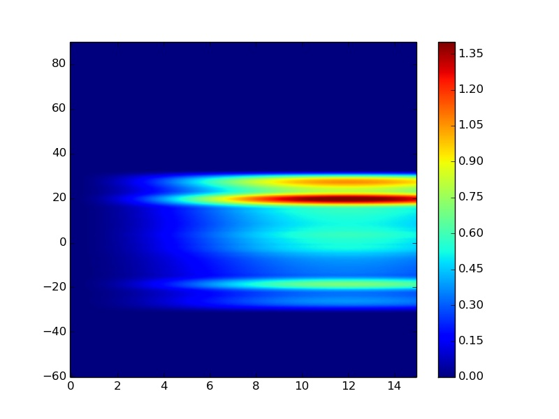
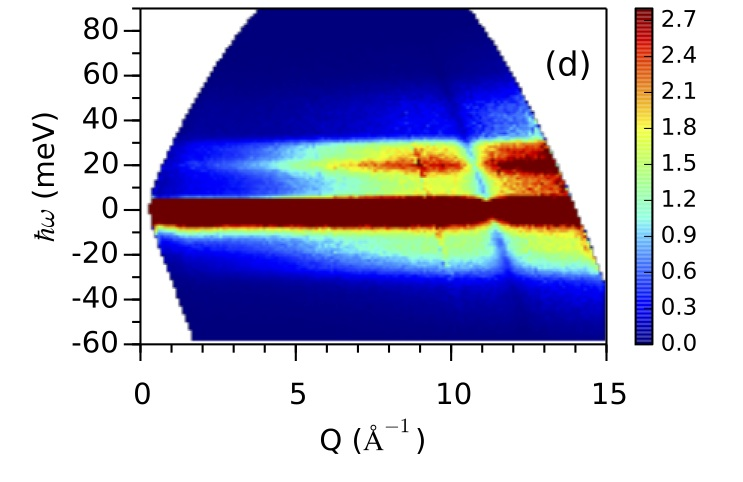

Incoherent inelastic neutron scattering -- Vanadium
Experimental data
The following is a typical experiment I(Q,E) data for a Vanadium plate measured at the SNS ARCS insturment.
Scattering Cross Section
Incoherent inelastic neutron scattering spectra are easiest to interpret. The coherent neutron scattering length of Vanadium is far less than its incoherent neutron scattering length, making it an ideal example for illustrating incoherent inelastic scattering, and a standard calibration sample for neutron experiments.
The one-phonon incoherent inelastic neutron scattering cross section for a single-element material is given by
$$ \left( \frac{d^2\sigma}{d\Omega dE_f} \right) _{\pm 1} = \frac{\sigma_{inc}}{4\pi} \frac{k_f}{k_i} N \; \frac{\hbar^2Q^2}{2M} \exp(-2W) \frac{Z(E)}{E} \left \{ \coth \left( \frac{E}{2k_B T} \right) \pm 1 \right \}/2 $$where $k_i$, $k_f$ is the momentum of the incident and outgoing neutron, respectively, $Q$ is the momentum transfer, $E$ is the energy transfer, $\left\{ \coth \left(\frac{E}{2k_B T} \right) \pm 1 \right\}/2$ is the thermal factor, and $Z(E)$ is the phonon density of states as a function of phonon energy $E$.
Q-dependency
One can see the (Q,E) distribution solly depends on the phonon Density of States (DOS) of the sample. This property makes the spectra easy to understand and interpret. Let us take a more careful look at the various factors in this formula.
The factor $2W$ is the Debye-Waller factor $$ 2W = \frac{\hbar^2 Q^2}{2M} \int \frac{1}{E} \coth(\frac{1}{2}\beta E) Z(E) dE $$
which can be rewritten as
$$ 2W = C_{DW} Q^2 $$ and $$ C_{DW} = \frac{\hbar^2}{2M} \int \frac{1}{E} \coth(\frac{1}{2}\beta E) Z(E) dE $$The $Q$ dependency of the spectrum is solely determined by the term
$$ \frac{\hbar^2 Q^2}{2M} \exp(-C_{DW} Q^2) $$The following is an interactive plot of I(Q) in which you can play with the $C_{DW}$ factor.
|
|
$C_{DW} = $
$Q_{max} = $
|
E-dependency
is governed by $$ \frac{Z(E)}{E} \left \{ \coth \left( \frac{E}{2k_B T} \right) \pm 1 \right \}/2 $$ Both the thermal factor $ \left \{ \coth \left( \frac{E}{2k_B T} \right)\pm 1 \right \}/2$ and density of states $Z(E)$ are easy to understand. The additional $\frac{1}{E}$ factor comes from the amplitude of the vibration: $$ \hbar \omega \sim m \omega^2 \langle u^2 \rangle $$ and $$ \langle u^2 \rangle \sim 1/\omega \sim 1/E $$ The following is an interactive plot of the thermal factor. You can play with the temperature slider on the right to see how detailed balance change with temperature.|
|
$T = $
|
Modeled IQE
As shown above, the $Q$ and $E$ dependencies of scattering intensities for incoherent phonon scattering are separable, and it is easy to model the full $I(Q,E)$ given Density of States:
Dark angle
Multi-phonon scattering
MCViNE simulation results
MCViNE simulation automatically takes care of all the factors presented above. In addition, it also takes care of factors such as instrument resolution, dynamical range, sample geometry, and multiple scattering.
